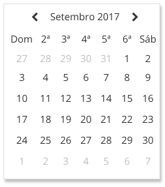
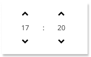

Pickers
Seleção de data e/ou horário específico


Utilização
Quando usar
- Quando é necessário agendar/reservar algo.
- Quando é preciso estabelecer uma data ou horário limite.
- Quando é preciso estabelecer um intervalo de datas ou horários.
Quando não usar
- Não é recomendado utilizar quando o usuário já conhece a data ou horário em questão (data de nascimento, por exemplo). Nesse caso, recomenda-se utilizar um campo simples com máscara.